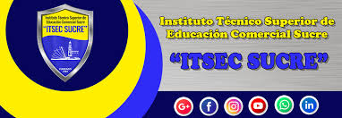

Misión
El Instituto Técnico Superior de Educación Comercial Sucre “ITSEC SUCRE” busca formar profesionales técnicos y tecnológicos, competitivos y emprendedores, con valores éticos y humanos al servicio de la sociedad.
Visión
Ser un Instituto técnico tecnológico inclusivo que busca consolidarse como referente a nivel nacional, con docentes idóneos y alta vocación de servicio.
Contacto
Dirección: Calle Manuel Melean 140
Teléfono: 6444156
Celular: 63776724
Email: info@itsecsucre.edu.bo
